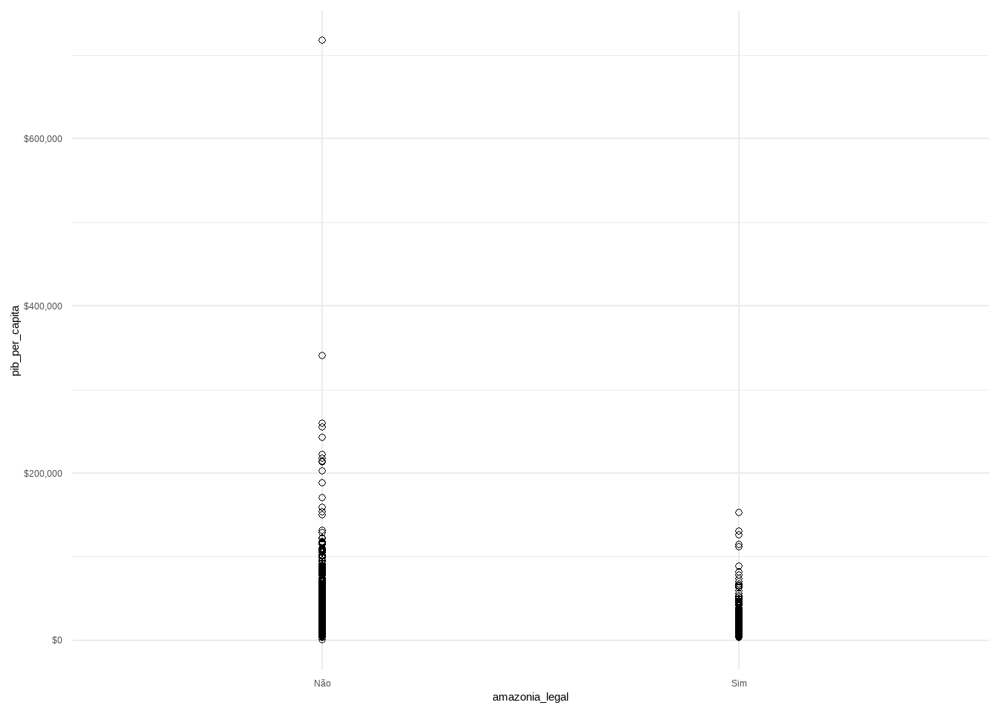

Capítulo 5 Introdução à regressão linear univariada
O modelo de regressão (não confundir com regressão linear) é uma forma bem ampla de modelar os dados para prever uma variável de interesse, usualmente designada pela letra \(Y\). Se eu quero prever os votos de candidatas em uma eleição, a votação de cada candidata é minha variável de interesse, \(Y\). Digamos que eu tenho uma amostra da intenção de votos das candidatas, obtidas por meio de uma pesquisa eleitoral.
Há muitas formas de apresentar ou motivar regressão linear. O método mais tradicional é pensar que a regressão linear é uma reta que é ajustada aos pontos observados. Porém, não tomaremos esse caminho aqui.
Nós iremos tomar aqui o caminho de considerar que a regressão linear é uma formade aproximar a chamada “Conditional Regression Function” (CEF, na sigla em inglês). O objetivo é entender “as far as possible with the available data how the conditional distribution of some response y varies across subpopulations determined by the possible values of the predictor or predictors” (Cook and Weisberg, apud Berk, p. 4).

## # A tibble: 1 × 1
## `mean(pib_per_capita)`
## <dbl>
## 1 17389.## # A tibble: 2 × 2
## amazonia_legal `mean(pib_per_capita)`
## <chr> <dbl>
## 1 Não 17953.
## 2 Sim 13883.Portanto, vamos retomrar o conceito de esperança condicional, para introduzir em seguida a função de regressão condicional (CEF, em inglÊs) e então como a regressão pode ser pensada como uma forma de aproximar a CEF.
5.1 Esperança Condicional
Uma das primeiras distinções que temos de fazer é sobre previsão e explicação (causal). Quando queremos prever, estamos interessados em saber quais os provaveis valores de variáveis no futuro, a parte de informações sobre a própria variável e outras no passado. Nesse sentido, é preciso algum tipo de suposição de que o futuro se assemelha ao passado de algum modo. Esse tipo de suposição usualmente toma a forma de um modelo probabilísitco, mas não apenas.
Quando estamos interessados em explicações causais, temos dois tipos de perguntas de pesquisa possíveis. Uma sobre a chamada causa dos efeitos e outra sobre o efeito das causas (Gelman & Imbens, 2013). A causa dos efeitos são perguntas do tipo: o que causal a II Grande Guerra? Ou qual a causa da eleição de Trump ou Bolsonaro? O que explica a desigualdade de renda no Brasil? São todas perguntas em que queremos explicar um efeito, isto é, identificar as causas de um fenômeno (efeito). Já o efeito das causas ão perguntas do tipo: qual o efeito da vacina de covid-19 sobre a mortalidade por Covid-19? Qual o efeito de checagem de notícias sobre a crença de pessoas em desinformação? Qual o efeito da magnitude eleitoral sobre fragmentação partidária? E assim por diante. Aqui, estamos interessados em entender o efeito causal de uma variável sobre outra, sem pretender esgotar todas as explicações de causa possíveis.
A maior parte dos métodos quantitativos existentes são bons para responder perguntas de previsão e de causa dos efeitos. Grosso modo, não há método quantitativo para estimação do efeito das causas, exceto realizar uma série de estudos independentes sobre várias causas dos efeitos, olhando uma causa distinta do mesmo efeito por vez e esperar que isso gere um conhecimento combinado sobre essas múltiplas causas. Mas não há, contudo, uma metodologia bem definida de como combinar esses estudos independentes em um único conhecimento do efeito conjunto das causas.
Assim, nosso curso será dedicado apenas a modelos de previsão e modelos de causa dos efeitos, que é o que temos de metodologias já desenvolvidas e consolidadas. Começamos por essa explicação porque uma perspectiva mais antiga, e ainda comum nas ciências sociais, é que modelos de regressão múltiplas permitem estimar o efeito de várias causas. Isso raramente é o caso e não adotaremos essa perspecitva aqui 1.
5.2 CEF
O que consgtitui uma boa previsão? Tradicionalmente, empregamos a noção de Erro Quadrátco Médio (EQM) para quantificar boas previsões. Quanto menor o EQM, melhor uma previsão. Se o objetivo é, portanto, fazer previsões que minimizem o EQM, iremos apresertar e mostrar que a Função de Esperança Condicional (CEF, na sigla em inglês) é o melhor preditor global possível. Vamos dizer em outras palavras, porque esse resultado é verdadeiramente icnrível. A CEF é o melhor preditor possível dentre todos que existam ou possam vir a existir, entendendo melhor como ter o menor EQM. Por isso que a CEF é o ponto de partida de qualquer preditor que exista, seja uma regressão simples ou algoritmos de aprendizens de máquinas como “random forest” ou mesmo algorítimos de deep learning de redes neurais por traz dos recentes avanços na inteligência artificial.
Mesmo os algorítmos mais avançados de inteleigência artificial, como os Large Language Models, que estão na base de ferramentas como ChatGPT, não podem ter desempenho melhor que a função de experança condicional, CEF, ao fazer uma previsão.
Naturalmente, se esse é o caso, a próxima pergunta que todos nós iremos fazer é: por que não aprender apenas a usar a CEF, que é o melhor preditor possível, e ser feliz para sempre? Porque a natureza não nos diz qual é a CEF. Nós nunca sabemos qual a verdadeira função de esperança condicional. Então tentamos aproximar o melhor possível a CEF, a partir de simplificações da realidade. Em particular, nosso curso pode ser pensado em torno das seguintes perguntas: como aproximar a CEF por meio de regressão linear (combinação lineares de preditores)? Quais as propridades dessa aproximação? Em que condições ela é uma boa aproximação e em que sentido (quantitativo e preciso) podemos falar de boa aproximação? Mais para o final do curso faremos a conexão entre a CEF, modelos preditivos e modelos causais.
5.3 Objetivos de aprendizagem ao final do capítulo
Estudantes deverão ter aprendido ao final do capítulo:
- Reconhecer que a função de esperança condicional, a CEF, em sua forma pura, é o melhor preditor possível para uma variável alvo, dadas as informações de outras variáveis.
- Memorizar que todos os outros predidores, sejam lineares ou não-lineares, incluindo preditores de deep learning, são tentativas de aproximar a CEF.
- Apreciar que o melhor predito linear (isto é, considerando apenas preditores que incluem combinação lineares de variáveis) produz previsões razoáveis, e antecipar que esse preditor nosleva à regressão linear.
# Carregue o pacote PNADcIBGE
library(PNADcIBGE)
# Importe os dados desejados
data <- get_pnadc(year=2017,
quarter=4,
selected=FALSE,
vars=c("Ano", "Trimestre", "UF", "V2007", "VD4020", "VD4035"),
design=FALSE, savedir=tempdir())
library(tidyverse)
library(tidylog)
data <- data %>%
select(Ano, Trimestre, UF, V2007, VD4020, VD4035)
# Renomeie as vari´aveis:
data <- data %>%
rename(genero = V2007,
renda = VD4020,
horas_trabalhadas = VD4035)library(ggplot2)
data %>%
ggplot(aes(renda)) + geom_histogram()## Warning: Removed 333172 rows containing non-finite values (`stat_bin()`).
data %>%
ggplot(aes(renda, horas_trabalhadas)) + geom_point()## Warning: Removed 333172 rows containing missing values (`geom_point()`).
A maior parte do curso será dedicadas a modelos preditivos, e apenas pontualmente falaremos de modelos causais↩︎